General Radial Flow model interpretation
This is a demonstration of the interpretation of a pumping test with the Barker (1988) solution.
MIT License Copyright (c) 2017 Philippe Renard - University of Neuchâtel (CHYN)
Contents
- FIRST EXAMPLE
- SECOND EXAMPLE
- THIRD example for the GRF model (Barker, 1988)
- Load the data and plot the diagnostic
- Prepare the model and fit it to the data
- Automatic fit and final figure
- Demo example for the grf model (Barker, 1988)
- Load the data and plot the diagnostic
- Prepare the model and check the preliminary fit to the data
- Automatic fit and final figure
The data set for this example comes from the following reference: G. Lods and P. Gouze (2004) WTFM, software for well test analysis in fractured media combining fractional flow with double porosity approaches. Computers and Geosciences. Vol 30. pp. 937-947 Example CS2 and CS3, page 943-944
This demo is composed by two example: grf_ds1.dat : time in s, drawdown in m in the well Sha1B grf_ds2.dat : time in s, drawdown in m in the well Sha1BT
FIRST EXAMPLE
Let us first load the data and plot them.
clear; clf; clc
| HYTOOL Demo |
We then define the values of the parameters that are required for the interpretation:
r = 26.2 m rw = rc = 0.1 m Q = 0.02322 m3/s
We prepare the model and fit it to the data. A manual trial is required.
grf_pre(26.2,0.1); p=grf_gss(t,s); %p=[0.002,0.00006,1]; trial('grf',p,t,s)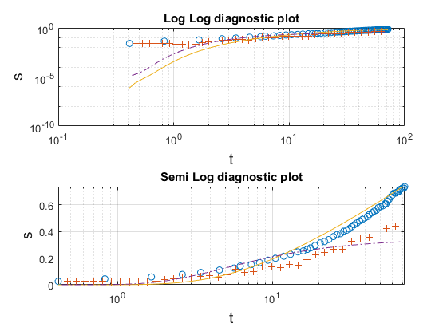
We can then display the result of the interpretation. Hytool find that the folowing values fort the transmissivity and storativity:
Equivalent transmissivity: 2.3 e-3m2/s Equivalent storativity: 4.4 e-2m2/s
p=fit('grf',p,t,s); grf_rpt(p,t,s,[0.021],'well Sha1B - automatic fit') figure (3)
Norm of Norm of
Iteration SSE Gradient Step
-----------------------------------------------------------
0 0.113835
1 0.0483569 530.954 0.0162024
2 0.0479939 1039.26 0.112482
3 0.0468764 1009.05 0.0978253
4 0.0458431 1032.36 0.0852219
5 0.0447992 1053.1 0.0740016
6 0.043762 1073.93 0.0644762
7 0.0427317 1093.76 0.0564405
8 0.0417165 1115.72 0.049775
9 0.04071 1137.06 0.044221
10 0.0397144 1158.47 0.0396264
11 0.0387346 1182.39 0.0358852
12 0.0377594 1202.73 0.0327879
13 0.0368009 1225.43 0.0302876
14 0.0358549 1248.39 0.0282688
15 0.0349222 1271.99 0.0266373
16 0.0340018 1295.3 0.0253156
17 0.0330954 1319.2 0.0242437
18 0.0322008 1341.9 0.0233561
19 0.031322 1365.87 0.0226228
20 0.0304577 1390.26 0.0220078
21 0.0296072 1414.27 0.0214781
22 0.0287723 1439.12 0.0210172
23 0.0279519 1463.93 0.0206045
24 0.0271461 1488.25 0.020227
25 0.0263557 1512.55 0.0198744
26 0.0255811 1537.29 0.0195406
27 0.0248225 1562.33 0.0192253
28 0.0240775 1584.48 0.0189085
29 0.0233515 1610.1 0.0186053
30 0.0226398 1633.41 0.018307
31 0.0219455 1658.19 0.0180112
32 0.0212661 1680.86 0.0177139
33 0.0206049 1706.53 0.0174252
34 0.019958 1728.87 0.0171313
35 0.0193281 1751.76 0.0168348
36 0.018714 1773.12 0.0165361
37 0.0181167 1795.04 0.0162368
38 0.017536 1817.21 0.0159414
39 0.0169711 1838.61 0.015644
40 0.0164221 1858.61 0.0153432
41 0.0158886 1876.31 0.0150398
42 0.0153723 1897.33 0.0147394
43 0.0148704 1913.51 0.0144374
44 0.0143844 1928.81 0.0141304
45 0.0139146 1946.39 0.0138273
46 0.0134594 1960.65 0.0135261
47 0.0130193 1974.39 0.0132238
48 0.0125942 1987.89 0.0129225
49 0.0121834 1999.29 0.0126232
50 0.0117869 2009.53 0.012325
51 0.0114045 2019.19 0.012028
52 0.0110358 2027.14 0.0117318
53 0.0106805 2033.7 0.0114396
54 0.0103383 2037.36 0.0111459
55 0.0100092 2040.29 0.0108557
56 0.00969271 2043.22 0.0105692
57 0.00938842 2045.03 0.0102904
58 0.00909587 2043.02 0.0100094
59 0.0088151 2041.05 0.00973404
60 0.00854553 2037.24 0.00946109
61 0.00828688 2031.27 0.00919277
62 0.00803884 2024.09 0.00892868
63 0.00780112 2012.93 0.00866749
64 0.00757347 2004.65 0.0084098
65 0.0073553 1992.13 0.00816039
66 0.00714647 1978.48 0.00791584
67 0.00694658 1963.41 0.00767254
68 0.00675537 1946.35 0.00743606
69 0.00657251 1929.29 0.00720526
70 0.00639769 1907.51 0.00697691
71 0.0062306 1888.81 0.00675573
72 0.00607091 1864.63 0.00654011
73 0.00591833 1843.12 0.00632852
74 0.00577258 1819.31 0.00612556
75 0.0056333 1794.77 0.00592625
76 0.00550029 1769.51 0.00573392
77 0.00537329 1742.08 0.00554483
78 0.00525213 1711.6 0.00536086
79 0.00513644 1683.8 0.0051801
80 0.00502593 1656.14 0.00500932
81 0.0049204 1627.79 0.00484389
82 0.00481965 1597.35 0.0046826
83 0.00472347 1566.76 0.00452608
84 0.0046317 1534.73 0.00437317
85 0.00454403 1504.89 0.00422543
86 0.00446038 1472.45 0.00408488
87 0.00438045 1440.71 0.00394501
88 0.00430419 1408.78 0.00381317
89 0.00423133 1378.15 0.00368418
90 0.00416157 1349.32 0.00356158
91 0.00409494 1320.39 0.003447
92 0.0040312 1290.29 0.00333164
93 0.00397035 1259.29 0.00322325
94 0.00391207 1229.54 0.00311385
95 0.00385639 1200.77 0.00301423
96 0.00380312 1170.21 0.00291399
97 0.00375214 1141.32 0.00281802
98 0.00370333 1113.34 0.00272598
99 0.00365656 1086.67 0.00263832
100 0.0036118 1059.4 0.00255473
101 0.00356889 1032.38 0.00247228
102 0.00352781 1005.44 0.00239265
103 0.00348838 980.449 0.00231656
104 0.00345055 956.558 0.00224569
105 0.00341423 932.757 0.00217559
106 0.00337941 908.147 0.0021091
107 0.00334602 885.038 0.00204435
108 0.00331392 860.85 0.00198026
109 0.00328308 840.09 0.00192025
110 0.00325343 818.542 0.00186305
111 0.00322492 798.351 0.00180752
112 0.00319748 778.16 0.0017541
113 0.00317105 758.572 0.00170325
114 0.00314562 741.275 0.00165598
115 0.00312114 721.902 0.00160742
116 0.0030976 703.69 0.0015623
117 0.00307487 685.87 0.00151599
118 0.00305305 668.24 0.00147637
119 0.00303198 650.285 0.00143122
120 0.00301162 633.83 0.00139115
121 0.00299199 619.897 0.00135401
122 0.00297304 604.575 0.00131824
123 0.00295477 588.899 0.00128262
124 0.00293707 575.42 0.00124696
125 0.00291997 562.773 0.00121608
126 0.00290346 549.56 0.00118502
127 0.00288748 536.393 0.00115245
128 0.00287207 524.235 0.00112465
129 0.00285715 511.473 0.00109525
130 0.00284272 498.561 0.00106722
131 0.00282871 487.221 0.00103876
132 0.00281515 476.99 0.00101355
133 0.00280204 466.402 0.000991362
134 0.00278929 455.219 0.000964328
135 0.00277696 446.065 0.000943889
136 0.002765 436.154 0.000920204
137 0.0027534 426.998 0.00089958
138 0.00274215 416.1 0.000876846
139 0.00273124 408.638 0.000857965
140 0.00272065 398.483 0.000836023
141 0.00271039 391.132 0.000818296
142 0.0027004 380.413 0.000796878
143 0.00269068 373.543 0.000779851
144 0.00268124 367.912 0.000765008
145 0.00267204 357.443 0.000744873
146 0.00266314 353.491 0.000733392
147 0.00265447 345.959 0.000714901
148 0.00264602 337.917 0.000698991
149 0.00263778 331.387 0.000684111
150 0.00262974 325.79 0.000670157
151 0.00262196 321.079 0.000659526
152 0.00261436 314.252 0.000642988
153 0.00261285 21108.1 0.0058288
154 0.00251565 14397.8 0.00497408
155 0.00246082 11455.7 0.00413553
156 0.0024204 8867.15 0.00348068
157 0.002389 6875.32 0.00299116
158 0.00236384 5329.79 0.00258806
159 0.00234305 4052.83 0.0022577
160 0.00223474 20574.7 0.0144677
161 0.00221279 60680.5 0.0066733
162 0.00218299 2554.4 0.000552818
163 0.00218115 1443.15 0.000352253
164 0.0021794 1721.22 0.000307553
165 0.00217777 1501.32 0.000296755
166 0.00217623 1591.96 0.000277501
167 0.00217475 1584.38 0.000265248
168 0.00217334 1604.42 0.000256489
169 0.00217199 1603.74 0.000243717
170 0.00217065 1771.06 0.000239137
171 0.00216941 1549.7 0.000235628
172 0.00216816 1834.92 0.000224648
173 0.00216698 1668.94 0.000223696
174 0.00216586 1580.72 0.000215397
175 0.00216479 1620.59 0.000203362
176 0.00216376 1577.85 0.000196853
177 0.00216279 1507.34 0.000190218
178 0.00216181 1798.4 0.000180579
179 0.0021609 1434.34 0.000183661
180 0.00216 1620.14 0.000173993
181 0.00215916 1452.92 0.000169465
182 0.00215832 1623.79 0.000161587
183 0.0021575 1648.27 0.00016218
184 0.00215672 1469.21 0.000158892
185 0.00215595 1653.33 0.000150661
186 0.00215521 1572.04 0.000149926
187 0.00215451 1397.38 0.000147475
188 0.00215383 1522.48 0.000137555
189 0.00215316 1492.46 0.000137176
190 0.00215252 1411.57 0.000132402
191 0.00215189 1539.09 0.000128414
192 0.00215126 1589.22 0.000126924
193 0.00215065 1628.29 0.000125523
194 0.00215009 1224.44 0.0001284
195 0.00214952 1540.16 0.000114809
196 0.00214897 1455.69 0.000115833
197 0.00214846 1312.19 0.000112556
198 0.00214795 1348.72 0.000108727
199 0.00214746 1295.03 0.000106449
200 0.00214696 1536.39 9.9263e-05
Warning: Iteration limit exceeded. Returning results from final iteration.
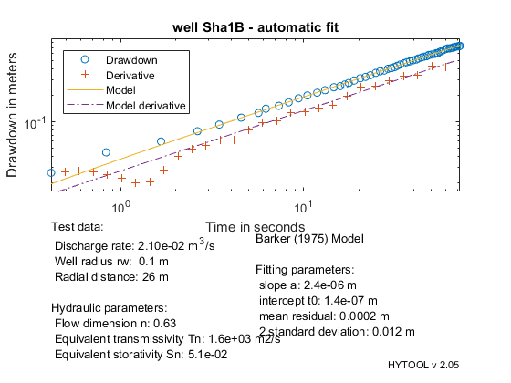 The results are in reasonable agreement with the values found by Hamm and Bideaux Model(1994):
skin factor = 6230 flow dimension n = 0.7 Equivalent Cylindrical Transmissivity = 108 m2/s Equivalent Cylindrical Storativity = 9.17 e-2 K e^(3-n) = 29.0 m^(4-n) s^(-1) Ss e^(3-n) =2.46 e-2 m^(2-n) lambda = 4.8e-5 omega = 2.59 e-4 sigma fracture = 5
SECOND EXAMPLE
Let us first load the data and plot them.
[t,s]=ldf('grf_ds2.dat');
diagnostic(t,s)
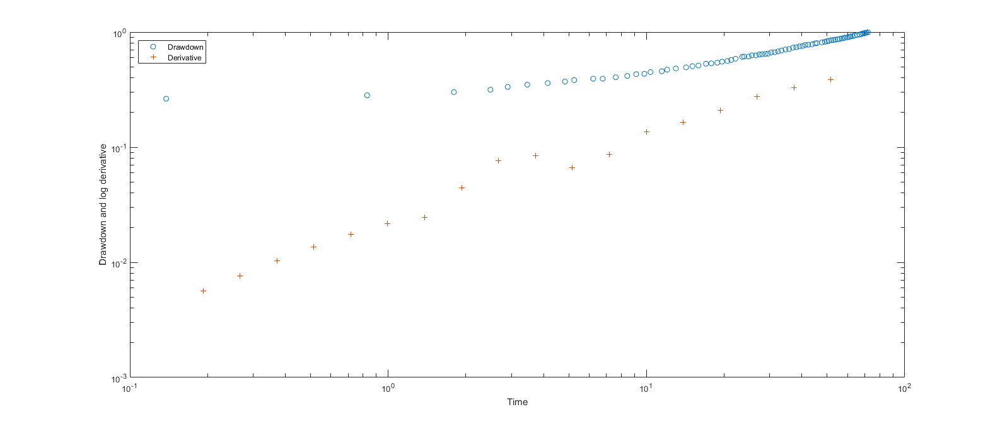 We then define the values of the parameters that are required for the interpretation:
Estimated reservoir thickness e = 40m r = 26.2 m rw = rc = 0.1 m Q = 83.6 m3/h = 0.02322 m3/s
We prepare the model and fit it to the data. A manual trial is required.
grf_pre(26.2,0.1);
p=grf_gss(t,s);
trial('grf',p,t,s)
Warning: Negative data ignored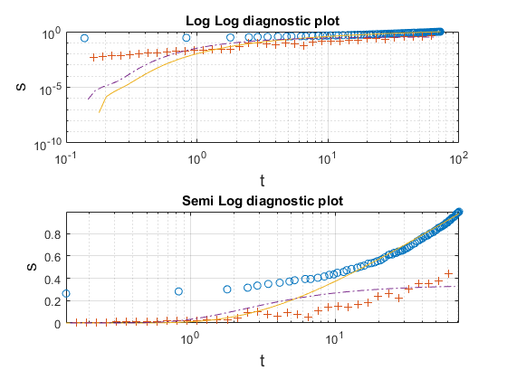
We can then display the result of the interpretation. Hytool find that the folowing values fort the transmissivity and storativity:
Equivalent transmissivity: 1.2e-1 m2/s Equivalent storativity: 5.7e-5
p=fit('grf',p,t,s); figure (4) grf_rpt(p,t,s,[0.021],'well Sha1BT - automatic fit')
Norm of Norm of
Iteration SSE Gradient Step
-----------------------------------------------------------
0 0.570932
1 0.430232 24677.2 0.0968267
2 0.336266 424.011 0.0473224
3 0.333079 332.414 0.0257434
4 0.331486 552.426 0.0214003
5 0.330081 555.699 0.019619
6 0.328703 550.101 0.0186448
7 0.327331 550.401 0.0179635
8 0.325963 553.586 0.0173779
9 0.324597 558.307 0.016838
10 0.323235 563.909 0.0163355
11 0.321875 570.018 0.0158554
12 0.320518 575.521 0.0153799
13 0.319164 582.617 0.0149416
14 0.317813 588.216 0.0145015
15 0.316464 594.555 0.0140813
16 0.31512 599.991 0.0136655
17 0.313778 607.034 0.0132824
18 0.31244 613.023 0.012899
19 0.311104 619.942 0.0125391
20 0.309772 626.736 0.0121872
21 0.308443 632.747 0.011844
22 0.307116 640.372 0.0115238
23 0.305793 647.453 0.0112084
24 0.304474 654.277 0.0109012
25 0.303157 661.214 0.0106068
26 0.301844 668.628 0.0103255
27 0.300534 676.538 0.010057
28 0.299227 683.642 0.00979261
29 0.297923 692.135 0.0095444
30 0.296623 699.025 0.00929684
31 0.295326 707.229 0.0090651
32 0.294032 714.621 0.00883651
33 0.292742 722.517 0.00861837
34 0.291455 731.01 0.00841043
35 0.290171 740.446 0.0082139
36 0.28889 749.59 0.0080213
37 0.287612 757.354 0.00783289
38 0.286338 766.62 0.00765517
39 0.285067 774.837 0.00748133
40 0.2838 783.841 0.00731541
41 0.282536 794.087 0.00715944
42 0.281274 803.855 0.0070072
43 0.280017 813.155 0.00686053
44 0.278763 821.245 0.00671634
45 0.277512 832.857 0.0065834
46 0.276264 842.723 0.00645307
47 0.275019 853.275 0.00632903
48 0.273778 864.042 0.00620997
49 0.272539 875.259 0.00609592
50 0.271304 885.577 0.00598531
51 0.270073 897.281 0.00587959
52 0.268845 907.169 0.00577647
53 0.267619 919.78 0.00567992
54 0.266397 931.247 0.00558587
55 0.265179 942.659 0.00549568
56 0.263964 954.427 0.0054093
57 0.262751 968.646 0.00532747
58 0.261542 981.217 0.0052484
59 0.260336 993.231 0.00517262
60 0.259132 1008.68 0.00509996
61 0.257931 1023.08 0.00503191
62 0.256734 1033.63 0.00496475
63 0.25554 1048.61 0.00489862
64 0.254348 1065.21 0.00483764
65 0.253159 1078.53 0.00477892
66 0.251973 1094.79 0.00472193
67 0.250789 1111.42 0.00466837
68 0.249608 1125.66 0.00461686
69 0.24843 1142.89 0.00456563
70 0.247255 1160.11 0.00451779
71 0.246082 1178.31 0.00447189
72 0.244912 1193.65 0.00442808
73 0.243745 1210.32 0.00438396
74 0.24258 1229.53 0.00434175
75 0.241418 1248.64 0.00430133
76 0.240258 1265.7 0.00426389
77 0.239101 1286.75 0.00422509
78 0.237946 1307.93 0.0041894
79 0.236793 1327.55 0.00415645
80 0.235643 1349.51 0.00412232
81 0.234495 1370.78 0.00409082
82 0.233349 1392.09 0.00406013
83 0.232206 1414.09 0.00402996
84 0.231064 1438.46 0.00399905
85 0.229925 1463.12 0.00397068
86 0.228787 1486.31 0.00394515
87 0.227652 1511.45 0.00391793
88 0.226519 1537.97 0.00389131
89 0.225387 1564.54 0.00386659
90 0.224258 1593.03 0.00384234
91 0.22313 1619.21 0.00381984
92 0.222004 1647.88 0.00379707
93 0.22088 1677.25 0.00377383
94 0.219758 1707.3 0.00375089
95 0.218638 1737.71 0.00373065
96 0.217519 1768.11 0.00370877
97 0.216402 1801.34 0.00368632
98 0.215288 1830.75 0.00367
99 0.214175 1866.91 0.00364533
100 0.213064 1901.54 0.0036268
101 0.211954 1938.57 0.00360598
102 0.210846 1974.19 0.00359043
103 0.20974 2011.19 0.00356982
104 0.208636 2050.83 0.00355006
105 0.207534 2087.45 0.00353424
106 0.206433 2131.62 0.00351183
107 0.205333 2173.25 0.00349523
108 0.204234 2218.05 0.00347664
109 0.203138 2262.25 0.00346108
110 0.202044 2304.4 0.00344802
111 0.200951 2353.43 0.00342685
112 0.19986 2398.18 0.00341104
113 0.198772 2446.22 0.0033937
114 0.197685 2494.56 0.00337525
115 0.196601 2544.61 0.00335836
116 0.195518 2598.71 0.0033384
117 0.194438 2650.02 0.00332414
118 0.19336 2703.85 0.0033081
119 0.192284 2760.56 0.00328695
120 0.19121 2818.63 0.00326963
121 0.190138 2878.79 0.00325482
122 0.189069 2936.24 0.00323641
123 0.188003 2997.72 0.00322092
124 0.186939 3061.88 0.00320176
125 0.185877 3124.82 0.00318404
126 0.18482 3189.2 0.00316939
127 0.183764 3258.68 0.00314752
128 0.182712 3325.75 0.00313097
129 0.181663 3396.37 0.00311267
130 0.180617 3470.04 0.00309499
131 0.179574 3540.82 0.00307824
132 0.178536 3616.78 0.00305828
133 0.177501 3693.78 0.00304017
134 0.176469 3769.96 0.00301946
135 0.175442 3848.49 0.00300482
136 0.17442 3927.25 0.00298423
137 0.173401 4009.33 0.00296389
138 0.172388 4093.76 0.00294418
139 0.171378 4177.44 0.00292533
140 0.170374 4265.45 0.00290488
141 0.169375 4352.29 0.00288648
142 0.168382 4438.47 0.00286536
143 0.167393 4526.53 0.0028428
144 0.166409 4621.1 0.00281826
145 0.165431 4719.08 0.00280417
146 0.16446 4811.29 0.00278188
147 0.163493 4909.6 0.00275783
148 0.162533 5008.73 0.00273787
149 0.16158 5105.88 0.00271731
150 0.160632 5209.04 0.0026948
151 0.159692 5311.32 0.00267404
152 0.158758 5410.37 0.00265036
153 0.157831 5519.2 0.00263057
154 0.156911 5623.52 0.00260487
155 0.155998 5730.89 0.00258391
156 0.155093 5840.47 0.00256127
157 0.154195 5946.49 0.00253758
158 0.153305 6067.49 0.00251555
159 0.152423 6175.09 0.00249322
160 0.151548 6280.25 0.00246787
161 0.150681 6403.81 0.00244477
162 0.149823 6519.19 0.00242116
163 0.148973 6636.39 0.00239796
164 0.14813 6743.78 0.00237145
165 0.147298 6877.34 0.0023529
166 0.146473 6987.83 0.00232627
167 0.145656 7099.98 0.00230012
168 0.144849 7226.97 0.00227915
169 0.14405 7341.51 0.00225175
170 0.143259 7466.68 0.00222899
171 0.142477 7599.08 0.00220383
172 0.141705 7725.38 0.00218187
173 0.140941 7846.97 0.00215726
174 0.140187 7970.02 0.00213412
175 0.139442 8103.38 0.00210898
176 0.138706 8226.68 0.00208706
177 0.137979 8341.86 0.00205951
178 0.13726 8461.76 0.00203215
179 0.136551 8616.63 0.00201377
180 0.135851 8724.01 0.00198793
181 0.13516 8870.28 0.00196468
182 0.134478 8991.1 0.00193995
183 0.133806 9122.28 0.00191685
184 0.133141 9252.99 0.00188963
185 0.132487 9391.64 0.00186949
186 0.132049 542447 0.0175618
187 0.122398 459656 0.0165674
188 0.116694 497231 0.0141631
189 0.111935 433554 0.0120738
190 0.108333 354088 0.0102191
191 0.105491 233338 0.00864485
192 0.103214 101171 0.00733876
193 0.101338 76318.7 0.00623798
194 0.0997707 226267 0.00534914
195 0.0984433 413651 0.00459896
196 0.0973044 552858 0.00399069
197 0.096326 812727 0.00343996
198 0.0954614 937297 0.00302426
199 0.09471 1.18166e+06 0.0026411
200 0.0940387 1.28199e+06 0.00235208
Warning: Iteration limit exceeded. Returning results from final iteration.
Warning: The Jacobian at the solution is ill-conditioned, and some model
parameters may not be estimated well (they are not identifiable). Use caution
in making predictions.
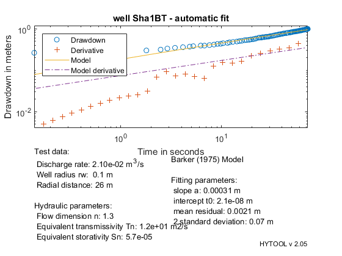 The results are in reasonable agreement with the values found by Hamm and Bideaux Model(1994):
skin factor = 6230 flow dimension n = 0.7 K e^(3-n) = 29.0 m^(4-n) s^(-1) Equivalent Cylindrical Transmissivity = 108 m2s-1 Ss e^(3-n) =2.46 e-2 m^(2-n) Equivalent Cylindrical Storativity = 9.17 e-2 lambda = 4.8e-5 omega = 2.59 e-4 sigma fracture = 5
THIRD example for the GRF model (Barker, 1988)
% Reference data to validate the GRF model when n=2 % % Table 5.1, page 172 in: % C.W. Fetter, 2001, Applied Hydrogeology, Fourth Edition. % Prentice Hall, Upper Saddle River, 598 pp. % % q=0.013888 m3/s % r=250 m % % With these data, the reference values obtained with the Theis model % are the following: % % T = 1.425 e-3 m2/s % S = 2.115 e-5 %
Load the data and plot the diagnostic
[t,s]=ldf('ths_ds1.dat');
diagnostic(t,s)
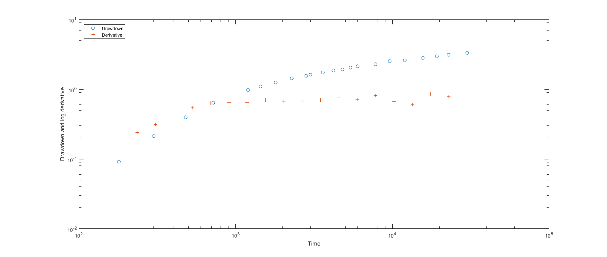 Prepare the model and fit it to the data
grf_pre(250,2); p=grf_gss(t,s); % The initial guess is incorrect trial('grf',p,t,s)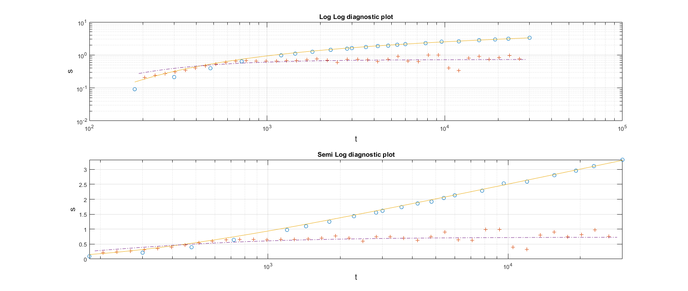
Automatic fit and final figure
p=fit('grf',p,t,s);
grf_rpt(p,t,s,[0.013888,250])
Norm of Norm of
Iteration SSE Gradient Step
-----------------------------------------------------------
0 0.0802157
1 0.0194845 12.029 0.0405213
2 0.0165546 3.43684 0.109313
3 0.0155831 3.14717 0.101327
4 0.0147624 2.50439 0.0958276
5 0.014106 1.9981 0.0903258
6 0.0135793 1.59545 0.0847179
7 0.0131553 1.27949 0.0792498
8 0.0128128 1.0288 0.073914
9 0.0125356 0.828978 0.0687586
10 0.012311 0.665085 0.0636475
11 0.0121285 0.538448 0.058964
12 0.0119798 0.435864 0.0545057
13 0.0118588 0.352233 0.0502121
14 0.0117601 0.284845 0.0461681
15 0.0116794 0.23223 0.0425616
16 0.0116137 0.187212 0.0389315
17 0.0115597 0.1532 0.0358367
18 0.0115155 0.124466 0.0328313
19 0.0114794 0.100837 0.0300023
20 0.0114499 0.0816298 0.0273563
21 0.0114335 2.01097 0.13537
22 0.011373 1.6358 0.128167
23 0.0113148 0.0188844 0.0142913
24 0.0113148 3.95958e-05 0.0005689
25 0.0113148 1.78666e-05 0.000427055
Iterations terminated: relative change in SSE less than OPTIONS.TolFun
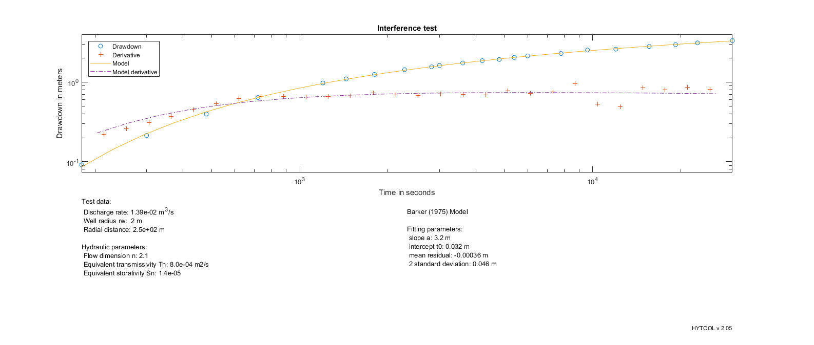 Demo example for the grf model (Barker, 1988)
% Source : Le Borgne, et al. 2004 WATER RESOURCES RESEARCH, VOL. 40, % W03512, doi:10.1029/2003WR002436, 2004 - Figure 8 % % Data files: % =========== % % grf_ds3.dat : time in seconds, drawdown in m % % r = 40 m % q = 34 m3/h = 9.444e-3 m3/s % % flow dimension n = 1.6 % % Les valeurs de transmissivité ou emmagasinement ne sont pas données. % Une interprétation avec WTFM donne. % Ssf = 1.8 e-2 1/m % Kf = 2.8 e-2 m/s % bf = 1 m % Reste à calculer les transmissivités équivalents ECT....
Load the data and plot the diagnostic
[t,s]=ldf('grf_ds3.dat'); t=t; % Conversion du temps en heure en temps en seconde diagnostic(t,s)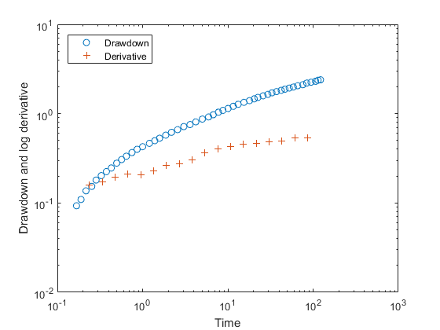
Prepare the model and check the preliminary fit to the data
grf_pre(40,0.1);
p=grf_gss(t,s);
trial('grf',p,t,s)
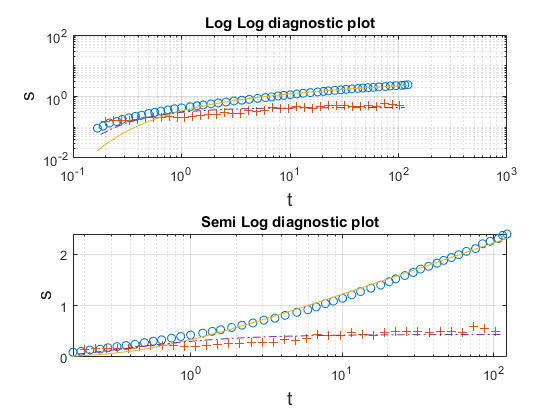 Automatic fit and final figure
p=fit('grf',p,t,s);
grf_rpt(p,t,s,[9.444e-3])
Norm of Norm of
Iteration SSE Gradient Step
-----------------------------------------------------------
0 0.275975
1 0.256606 7261.68 0.0593628
2 0.248944 14066.8 0.0479342
3 0.241778 14064.9 0.0437727
4 0.23479 14002.7 0.0410408
5 0.227961 13972.5 0.0386955
6 0.221292 13919.6 0.0365124
7 0.214783 13861.2 0.0344755
8 0.208432 13798.7 0.032575
9 0.202237 13738.8 0.0307951
10 0.196194 13677.5 0.0291402
11 0.190305 13592.9 0.0275667
12 0.184566 13520.7 0.0261057
13 0.178978 13427.2 0.0247214
14 0.173535 13335 0.0234334
15 0.16824 13231.4 0.0222133
16 0.163088 13129 0.0210726
17 0.158077 13018.4 0.0200027
18 0.153204 12909.6 0.0190032
19 0.148467 12792.4 0.0180593
20 0.143865 12658.9 0.0171661
21 0.139395 12532.7 0.0163321
22 0.135055 12404.6 0.0155473
23 0.130842 12270.6 0.0148047
24 0.126752 12134.1 0.0141133
25 0.122785 11997.5 0.0134572
26 0.118938 11841.3 0.0128353
27 0.115209 11685.5 0.0122505
28 0.111594 11544.3 0.0117048
29 0.10809 11386.5 0.0111876
30 0.104697 11224.5 0.0106953
31 0.101411 11057.7 0.010232
32 0.0982296 10902.3 0.00979829
33 0.0951496 10739.9 0.00938675
34 0.0921688 10577.9 0.00899752
35 0.0892851 10411.1 0.00862829
36 0.0864961 10234.8 0.00827827
37 0.0837987 10067.7 0.00794967
38 0.0811909 9903.51 0.00763631
39 0.0786699 9739.09 0.00734104
40 0.076234 9556.26 0.00705822
41 0.0738807 9381.56 0.00679088
42 0.0716072 9214.14 0.00653841
43 0.0694117 9046.22 0.00629702
44 0.0672911 8885.04 0.00607046
45 0.0652445 8701.36 0.00585058
46 0.0632684 8542.18 0.00564553
47 0.0613615 8371.11 0.00544799
48 0.0595216 8202.52 0.00526031
49 0.0577468 8028.41 0.00508037
50 0.0560345 7866.36 0.00491101
51 0.0543833 7704.94 0.00474778
52 0.0527906 7542.41 0.0045933
53 0.0512556 7376.26 0.00444329
54 0.0497758 7221.78 0.00430126
55 0.048349 7066.93 0.00416666
56 0.046974 6917.04 0.00403677
57 0.0456496 6741.25 0.00391037
58 0.0443739 6590.7 0.00379039
59 0.0431445 6454.83 0.00367694
60 0.0419603 6304.37 0.00356707
61 0.0408199 6152.54 0.00346152
62 0.0397216 6010.35 0.00336058
63 0.0386642 5867.11 0.00326268
64 0.0376463 5721.96 0.00316891
65 0.0366661 5585.59 0.00307936
66 0.0357227 5449.3 0.00299256
67 0.0348147 5320.11 0.00290903
68 0.0339409 5184.31 0.00282829
69 0.0330999 5057.3 0.00275117
70 0.0322905 4938.5 0.00267706
71 0.0315121 4799.65 0.0026041
72 0.0307629 4694.46 0.00253494
73 0.0300422 4569.29 0.00246794
74 0.029349 4453.82 0.00240301
75 0.0286821 4342.02 0.00234029
76 0.0283955 269949 0.0193699
77 0.0218194 180021 0.0155137
78 0.0183741 132090 0.0122612
79 0.0162427 95133.3 0.00980813
80 0.0148981 67983 0.00790409
81 0.0140314 48121.3 0.00639746
82 0.0134632 34016.1 0.00520864
83 0.0130854 23942.3 0.00425709
84 0.0128322 16738.7 0.00348484
85 0.0126613 11708.8 0.00286025
86 0.0125455 8151.5 0.00235032
87 0.0124667 5679.92 0.00193492
88 0.0124129 3952.45 0.0015956
89 0.012361 42593.8 0.00518702
90 0.0122982 7981.31 0.00231424
91 0.0122964 15.1621 0.000120891
92 0.0122964 2.22546 3.36061e-05
93 0.0122964 25.4602 2.59548e-07
Iterations terminated: relative change in SSE less than OPTIONS.TolFun
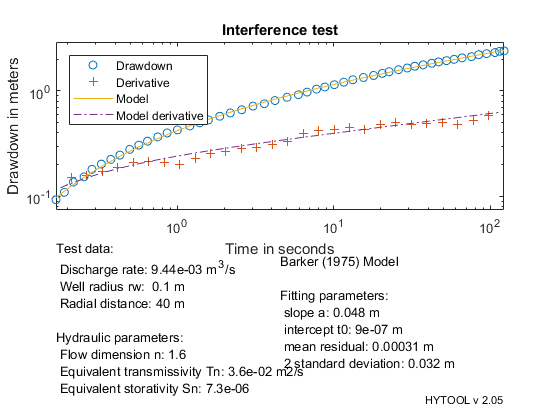